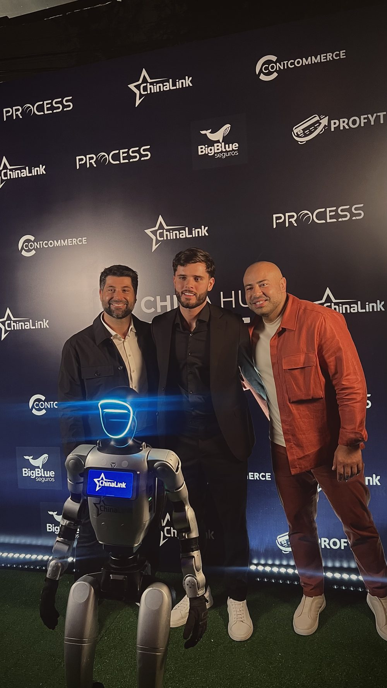

Mensagem de recuperação de venda: exemplos prontos de WhatsApp que trazem o cliente de volta
A venda não morreu — ela travou. Aqui estão os textos exatos que eu uso para recuperar carrinho abandonado, Pix e boleto não pago, e a estrutura por trás de cada um para você adaptar à sua loja.

Uma boa mensagem de recuperação de venda tem quatro partes: identificação pessoal (nome do cliente e da loja), o contexto (o produto específico que ficou para trás), uma pergunta aberta que convida a responder, e o caminho fácil (o link direto para finalizar). Ela é curta, soa humana e não começa oferecendo desconto. O erro que mais derruba a resposta é mandar um texto de propaganda genérico — do tipo “aproveite nossas ofertas!” — em vez de falar com uma pessoa que estava a um clique de comprar.
Eu construo agentes de IA que fazem exatamente isso o dia inteiro. Então, em vez de teoria, vou te dar os textos prontos — carrinho, Pix, boleto, follow-up — e explicar o porquê de cada palavra, para você adaptar ao seu negócio.
- Fale como pessoa, não como propaganda. Nome + produto exato.
- A primeira mensagem pergunta, não vende. Desconto só depois.
- Carrinho, Pix e boleto pedem mensagens diferentes — o momento mudou.
- De 2 a 3 mensagens, espaçadas. Pare quando o cliente responde ou compra.
Por que a maioria das mensagens de recuperação é ignorada
A maior parte das lojas comete o mesmo erro: trata quem abandonou o carrinho como alguém que precisa ser convencido do zero. Mas essa pessoa já escolheu o produto, já colocou no carrinho, já começou o checkout. Ela não precisa de um anúncio — precisa de um empurrão e, muitas vezes, de uma dúvida resolvida. Quando você manda “Olha só nossas novidades 🔥”, está ignorando tudo o que ela já fez e voltando à estaca zero. A mensagem certa reconhece onde o cliente parou e só remove o atrito que o travou.
A estrutura de uma mensagem que funciona
Toda mensagem de recuperação que converte segue a mesma espinha dorsal. Memorize estas quatro partes:
- 1. Identificação pessoal: o nome do cliente e o nome da loja. Sem isso, parece disparo em massa.
- 2. Contexto específico: o produto exato que ficou no carrinho, não “seu pedido”. Especificidade prova que é sobre ele.
- 3. Pergunta aberta: algo que convide a responder — “ficou alguma dúvida?”, “posso te ajudar a fechar?”. Conversa recupera mais do que monólogo.
- 4. Caminho fácil: o link direto para o checkout, já com os itens. Quanto menos cliques, mais venda.
Recuperação de venda não é insistência. É remover o atrito que travou alguém que já queria comprar.
Exemplos prontos: carrinho abandonado
No carrinho, o cliente ainda está decidindo. A missão da mensagem é abrir uma conversa e descobrir o que travou — não forçar a venda. Comece assim:
Mensagem 1 (poucos minutos depois):
Oi, {nome}! Aqui é da {loja} 🙂 Vi que você estava finalizando o {produto} e a compra não concluiu. Ficou alguma dúvida sobre frete, prazo ou pagamento? Se quiser, consigo te ajudar a fechar por aqui mesmo: {link}
Mensagem 2 (algumas horas depois, se não respondeu):
{nome}, só passando pra garantir que você não perca o {produto} — ainda está reservado no seu carrinho. Se o frete ou o prazo pesou, me fala que eu vejo a melhor opção pra sua região. Pra retomar de onde parou: {link}
Repare: nenhuma das duas oferece desconto. O cupom, quando entra, deve vir só mais tarde e com estratégia — porque dar desconto cedo demais treina o cliente a abandonar o carrinho de propósito e come a sua margem. Eu detalho isso no artigo sobre desconto na recuperação de carrinho abandonado.
Exemplos prontos: Pix e boleto não pagos
Aqui a lógica vira. Quem gerou um Pix ou boleto já decidiu comprar — faltou só concluir o pagamento. Então a mensagem não vende de novo; ela só facilita pagar. Vender outra vez nesse momento soa estranho e, às vezes, levanta a dúvida que não existia.
Pix não pago (dentro da validade):
Oi, {nome}! Seu pedido do {produto} na {loja} está quase pronto — só falta o Pix cair pra gente separar e enviar. O código ainda está válido: {link/código}. Assim que você pagar, já disparamos o envio. Qualquer coisa, é só me chamar aqui. 👍
Boleto não pago (perto do vencimento):
{nome}, seu boleto do {produto} vence {data} e depois disso o pedido é cancelado automaticamente. Pra não perder, aqui está a 2ª via: {link}. Se preferir pagar no Pix (cai na hora), eu gero pra você — é só avisar.
Note o detalhe do boleto: oferecer a troca para Pix. O boleto tem a pior taxa de concretização entre os meios de pagamento justamente porque o cliente pode desistir até o vencimento. Dar um caminho mais rápido recupera parte desse vazamento. Se você perde muita venda já no checkout, vale ler sobre meios de pagamento e taxa de aprovação no e-commerce. E o passo a passo específico de recuperar esses pedidos está em Pix e boleto não pagos com IA.
O follow-up: quando o cliente respondeu mas sumiu de novo
Muitas vendas morrem no meio da conversa: o cliente pergunta algo, você responde, e ele some. O follow-up resgata esse momento. A chave é retomar o fio sem recomeçar:
Oi, {nome}! Ontem você perguntou sobre o prazo de entrega do {produto}. Consegui confirmar: chega em até {X} dias úteis na sua região. Ainda faz sentido pra você? Se sim, deixo tudo pronto pra fechar: {link}
Os erros que fazem o cliente bloquear você
- Mensagem genérica: “Temos ofertas pra você!” — sem nome, sem produto. Vai direto para o arquivado.
- Desconto na primeira mensagem: ensina o cliente a abandonar de propósito e destrói margem.
- Volume demais: 5, 6 mensagens seguidas. Isso gera denúncia de spam e derruba a entrega de toda a sua base.
- Texto robótico: “Prezado cliente, identificamos a não conclusão da sua transação.” Ninguém fala assim no WhatsApp.
- Não responder na hora: o cliente volta às 22h e ninguém atende até o dia seguinte. A venda esfria.
Por que isso vira trabalho de um agente de IA
Mandar uma mensagem bonita é fácil. O difícil é mandar a mensagem certa, para a pessoa certa, na hora certa — e responder quando ela volta. Com volume, ninguém da equipe dá conta de personalizar nome e produto em cada caso, lembrar de cada follow-up e estar disponível às 23h de um domingo. É aí que entra um agente de IA para recuperar vendas: ele preenche o nome e o produto certos, dispara no momento ideal, responde quem retorna, trata objeções como “tá caro” e “frete caro” e sabe a hora de parar. O texto é só a ponta; o valor está na operação rodando sozinha, 24h.
Se você quer entender a cadência ideal — quantas mensagens, com que intervalo e quando encerrar — veja a régua de recuperação de vendas no WhatsApp. É o que transforma esses textos num sistema previsível, e não em tiros soltos.
No fim, recuperar venda é a forma mais barata de crescer que existe: é receita que já estava quase sua. Você não pagou tráfego de novo, não conquistou um cliente do zero — só terminou uma conversa que tinha ficado pela metade.
Perguntas frequentes
O que escrever na mensagem de recuperação de carrinho abandonado?
Escreva como uma pessoa, não como um robô: cumprimente pelo nome, lembre o produto exato que ficou no carrinho, pergunte se travou alguma dúvida (frete, prazo, pagamento) e deixe o link direto para finalizar. Uma mensagem curta, pessoal e com uma única pergunta aberta responde melhor do que um texto de propaganda com cupom logo de cara.
Qual a estrutura de uma boa mensagem de recuperação?
Quatro partes: 1) identificação pessoal (nome do cliente e da loja), 2) contexto (o produto específico), 3) uma pergunta aberta que convida a responder, e 4) o caminho fácil (link direto para o checkout). Desconto, quando usado, entra só depois, na segunda ou terceira mensagem — nunca na primeira.
Posso usar a mesma mensagem para carrinho, Pix e boleto não pago?
Não. São momentos diferentes. No carrinho, o cliente ainda está decidindo — a mensagem tira dúvida. No Pix/boleto não pago, ele já decidiu comprar — a mensagem só facilita concluir o pagamento, sem vender de novo. Misturar os dois faz a mensagem soar deslocada e derruba a resposta.
Quantas mensagens de recuperação posso enviar?
Em geral de 2 a 3 mensagens, espaçadas: a primeira em minutos, a segunda em algumas horas e a terceira no dia seguinte. Parar quando o cliente responde, compra ou pede para não receber mais. Insistir além disso queima a marca e aumenta bloqueio e denúncia de spam.
Vale a pena usar um agente de IA para enviar as mensagens de recuperação?
Sim, quando o volume cresce. Um agente de IA personaliza cada mensagem com o produto e o nome certos, responde quem retorna, trata objeções e agenda os follow-ups 24h por dia — sem depender de alguém lembrar de mandar. O ganho não é só escrever: é responder na hora quando o cliente volta a falar.

Fundador da Gene Company. Especialista em sistemas e agentes de IA, criação de marcas e tráfego pago com ROI escalável para empresas. Santos/BR, atende Brasil e exterior. Fale comigo no WhatsApp →